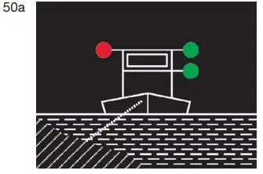
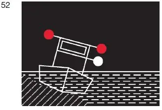
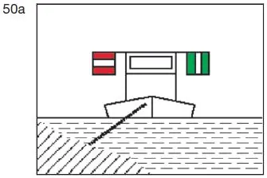
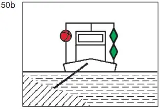
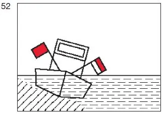

§ 6.22a Vorbeifahrt an schwimmenden Gerätenbei der Arbeit sowie an festgefahrenen oder gesunkenen Fahrzeugen(Anlage 3: Bild 50a, 50b, 52)
Binnenschifffahrtsstraßen-Ordnung
Es ist verboten, an einem der in § 3.25 genannten Fahrzeuge an der Seite vorbeizufahren, an dem es
1. das rote Licht nach § 3.25 Nummer 1 Satz 1 Buchstabe b Doppelbuchstabe aa, Satz 2 Buchstabe b Doppelbuchstabe aa, Nummer 2 Satz 1, |  |  |
2. das Tafelzeichen A.1 (Anlage 7) oder den roten Ball nach § 3.25 Satz 1 Nummer 1 Buchstabe b Doppelbuchstabe bb |  |  |
oder
3. die rote Flagge nach § 3.25 Nummer 1 Satz 2 Buchstabe b Doppelbuchstabe bb, Nummer 2 Satz 1 |  |
zeigt.